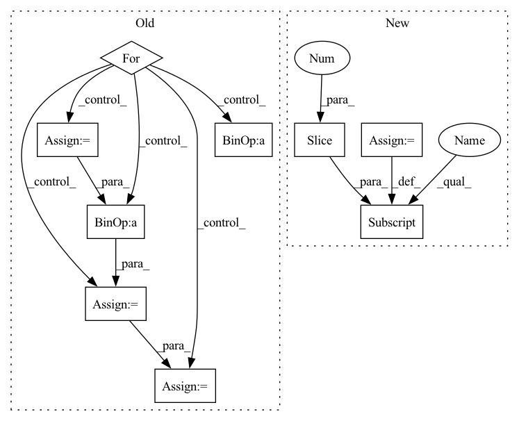

Pattern ID :26153
Before Change
// with tqdm(dataset, desc="Test{}".format(str(epoch)), total=len(dataset), leave=True) as test_epoch:
with torch.no_grad():
for idx, (X_test, Y_test, dia, sys, mean) in enumerate(test_epoch):
hypothesis = model(X_test, scaler=scaler)
"""Negative Pearson Loss"""
rmse_cost = loss[0](hypothesis, Y_test)
// neg_cost = 0
"""STFT Loss"""
stft_cost = loss[1](hypothesis, Y_test)
"""DBP Loss"""
// d_cost = loss[0](pred_d, dia)
"""SBP Loss"""
// s_cost = loss[0](pred_s, sys)
"""Total Loss"""
cost = rmse_cost + stft_cost // + d_cost + s_cost
test_cost_sum += cost.__float__()
test_avg_cost = test_cost_sum / (idx + 1)
test_epoch.set_postfix(rmse=rmse_cost.__float__(), stft=stft_cost.__float__(), tot=test_avg_cost)
if plot_flag:
plot_prediction(X_test[0], Y_test[0], [dia[0], sys[0], mean[0]], hypothesis[0], epoch)After Change
total_cost = np.sum(avg_cost_list)
temp = {}
for i in range(len(loss)):
temp[(str(loss[i]))[:-2]] = (round(avg_cost_list[i], 3))
test_epoch.set_postfix(losses=temp, tot=total_cost)
if plot_flag:In pattern: SUPERPATTERN
Frequency: 3
Non-data size: 9
Instances Fragment ID: 78840563
Project Name: tvs-ai/pytorch_rppgs
Commit Name: 79fa5ea2fc22ff76197fc5272382574b54608880
Time: 2023-01-02
Author: forownsake@gmail.com
File Name: vid2bp/test.py
M Class Name: AnonimousClass
N Class Name: AnonimousClass
M Method Name: test(6)
N Method Name: test(5)
M Parent Class:
N Parent Class:
M File Name: vid2bp/test.py
N File Name: vid2bp/test.py
M Start Line: 53
M End Line: 84
N Start Line: 61
N End Line: 91
Before Change
// with tqdm(dataset, desc="Test{}".format(str(epoch)), total=len(dataset), leave=True) as test_epoch:
with torch.no_grad():
for idx , (X_test, Y_test, dia, sys, mean) in enumerate(test_epoch):
hypothesis = model(X_test, scaler=scaler)
"""Negative Pearson Loss"""
rmse_cost = loss[0](hypothesis, Y_test)
// neg_cost = 0
"""STFT Loss"""
stft_cost = loss[1](hypothesis, Y_test)
"""DBP Loss"""
// d_cost = loss[0](pred_d, dia)
"""SBP Loss"""
// s_cost = loss[0](pred_s, sys)
"""Total Loss"""
cost = rmse_cost + stft_cost // + d_cost + s_cost
test_cost_sum += cost.__float__()
test_avg_cost = test_cost_sum / (idx + 1)
test_epoch.set_postfix(rmse=rmse_cost.__float__(), stft=stft_cost.__float__(), tot=test_avg_cost)
if plot_flag:
plot_prediction(X_test[0], Y_test[0], [dia[0], sys[0], mean[0]], hypothesis[0], epoch)After Change
hypothesis, Y_test,
idx + 1)
total_cost = np.sum(avg_cost_list)
temp = {}
for i in range(len(loss)):
temp[(str(loss[i]))[:-2]] = (round(avg_cost_list[i], 3))
test_epoch.set_postfix(losses=temp, tot=total_cost)
if plot_flag: Fragment ID: 78840562
Project Name: tvs-ai/pytorch_rppgs
Commit Name: 79fa5ea2fc22ff76197fc5272382574b54608880
Time: 2023-01-02
Author: forownsake@gmail.com
File Name: vid2bp/test.py
M Class Name: AnonimousClass
N Class Name: AnonimousClass
M Method Name: test(6)
N Method Name: test(5)
M Parent Class:
N Parent Class:
M File Name: vid2bp/test.py
N File Name: vid2bp/test.py
M Start Line: 53
M End Line: 84
N Start Line: 61
N End Line: 91
Before Change
_, H, W = ps.shape
em = utils.helpers.var_or_cuda(torch.zeros(B, K, H, W))
for i in range(B):
begin = sum(n_objects[:i])
end = begin + n_objects[i]
em[i, 0] = torch.prod(1 - ps[begin:end], dim=0) // bg prob
em[i, 1:n_objects[i] + 1] = ps[begin:end] // obj prob
em = torch.clamp(em, 1e-7, 1 - 1e-7)
logit = torch.log((em / (1 - em)))After Change
def soft_aggregation(self, ps, K):
n_objects, H, W = ps.shape
em = utils.helpers.var_or_cuda(torch.zeros(1, K, H, W))
em[0, 0] = torch.prod(1 - ps, dim=0) // bg prob
em[0, 1:n_objects + 1] = ps // obj prob
em = torch.clamp(em, 1e-7, 1 - 1e-7)
logit = torch.log((em / (1 - em)))
return logit Fragment ID: 78840561
Project Name: hzxie/rmnet
Commit Name: c5d14d38f8099d8ea0ad359d904cdd70c3642ee6
Time: 2020-04-11
Author: root@haozhexie.com
File Name: models/stm.py
M Class Name: STM
N Class Name: STM
M Method Name: soft_aggregation(3)
N Method Name: soft_aggregation(4)
M Parent Class: torch.nn.Module
N Parent Class: torch.nn.Module
M File Name: models/stm.py
N File Name: models/stm.py
M Start Line: 261
M End Line: 272
N Start Line: 264
N End Line: 266
Before Change
// with tqdm(dataset, desc="Test{}".format(str(epoch)), total=len(dataset), leave=True) as test_epoch:
with torch.no_grad():
for idx , (X_val, Y_val, dia, sys, mean) in enumerate(valid_epoch):
hypothesis = model(X_val, scaler=scaler)
"""Negative Pearson Loss"""
rmse_cost = loss[0](hypothesis, Y_val)
// neg_cost = 0
"""STFT Loss"""
stft_cost = loss[1](hypothesis, Y_val)
"""DBP Loss"""
// d_cost = loss[0](pred_d, dia)
"""SBP Loss"""
// s_cost = loss[0](pred_s, sys)
"""Total Loss"""
cost = rmse_cost + stft_cost// + d_cost + s_cost
valid_cost_sum += cost.__float__()
valid_avg_cost = valid_cost_sum / (idx + 1)
valid_epoch.set_postfix(rmse=rmse_cost.__float__(), stft=stft_cost.__float__(), tot=valid_avg_cost)
wandb.log({"Valid Loss": valid_avg_cost}, step=epoch)
// wandb.log({"Valid Loss": valid_avg_cost,After Change
hypothesis, Y_val,
idx + 1)
total_cost = np.sum(avg_cost_list)
temp = {}
for i in range(len(loss)):
temp[(str(loss[i]))[:-2]] = (round(avg_cost_list[i], 3))
valid_epoch.set_postfix(losses=temp, tot=total_cost)
// wandb.init(project="VBPNet", entity="paperchae") Fragment ID: 78840565
Project Name: tvs-ai/pytorch_rppgs
Commit Name: 79fa5ea2fc22ff76197fc5272382574b54608880
Time: 2023-01-02
Author: forownsake@gmail.com
File Name: vid2bp/validation.py
M Class Name: AnonimousClass
N Class Name: AnonimousClass
M Method Name: validation(5)
N Method Name: validation(5)
M Parent Class:
N Parent Class:
M File Name: vid2bp/validation.py
N File Name: vid2bp/validation.py
M Start Line: 29
M End Line: 58
N Start Line: 31
N End Line: 53